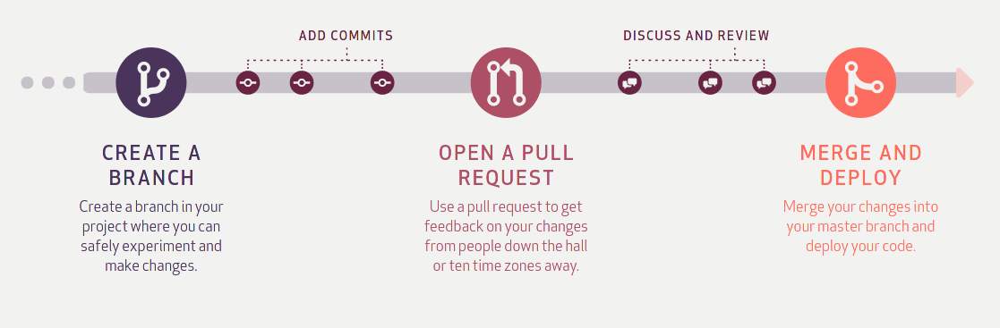

What is Git?
Git is used to store the source code for a project and track the complete history of all changes to that code. It
allows developers to collaborate on a project more effectively by providing tools for managing possibly conflicting
changes from multiple developers. GitHub allows developers to change, adapt and improve software from its public
repositories for free, but it charges for private repositories, offering various paid plans. Each public or private
repository contains all of a project's files, as well as each file's revision history. Repositories can have
multiple collaborators and can be either public or private.
What is GitHub?
GitHub facilitates social coding by providing a web interface to the Git code repository and management tools for
collaboration. GitHub can be thought of as a serious social networking site for software developers. Members can
follow each other, rate each other's work, receive updates for specific projects and communicate publicly or
privately.
Three important terms used by developers in GitHub are fork, pull request and merge. A fork, also known
as a branch,
is simply a repository that has been copied from one member's account to another member's account. Forks and
branches allow a developer to make modifications without affecting the original code. If the developer would like to
share the modifications, she can send a pull request to the owner of the original repository. If, after reviewing
the modifications, the original owner would like to pull the modifications into the repository, she can accept the
modifications and merge them with the original repository. Commits are, by default, all retained and interleaved
onto the master project, or can be combined into a simpler merge via commit squashing.
How github works
GitHub builds collaboration directly into the development process. Work is organized into repositories, where
developers can outline requirements or direction and set expectations for team members. Then, using the GitHub flow,
developers simply create a branch to work on updates, commit changes to save them, open a pull request to propose
and discuss changes, and merge pull requests once everyone is on the same page.
The Github Flow
The GitHub flow is a lightweight, branch-based workflow built around core Git commands used by teams around the
globe—including ours.

The GitHub flow has six steps, each with distinct benefits when implemented:
Create a branch: Topic branches created from the canonical deployment branch (usually main) allow teams to
contribute to many parallel efforts. Short-lived topic branches, in particular, keep teams focused and results in
quick ships.
Add commits: Snapshots of development efforts within a branch create safe, revertible points in the project’s
history.
Open a pull request: Pull requests publicize a project’s ongoing efforts and set the tone for a transparent
development process.
Discuss and review code: Teams participate in code reviews by commenting, testing, and reviewing open pull requests.
Code review is at the core of an open and participatory culture.
Merge: Upon clicking merge, GitHub automatically performs the equivalent of a local ‘git merge’ operation. GitHub
also keeps the entire branch development history on the merged pull request.
Deploy: Teams can choose the best release cycles or incorporate continuous integration tools and operate with the
assurance that code on the deployment branch has gone through a robust workflow.
What’s a version control system?
A version control system, or VCS, tracks the history of changes as people and teams collaborate on projects
together. As the project evolves, teams can run tests, fix bugs, and contribute new code with the confidence that
any version can be recovered at any time. Developers can review project history to find out:
Which changes were made?
Who made the changes?
When were the changes made?
Why were changes needed?
Basic git commands
git init -- initializes a brand new Git repository and begins tracking an existing directory. It adds a
hidden
subfolder within the existing directory that houses the internal data structure required for version
control.
git clone -- creates a local copy of a project that already exists remotely. The clone includes all the
project’s
files, history, and branches.
git add --stages a change Git tracks changes to a developer’s codebase, but it’s necessary to stage and take
a
snapshot of the changes to include them in the project’s history. This command performs staging, the first part of
that two-step process. Any changes that are staged will become a part of the next snapshot and a part of the
project’s history. Staging and committing separately gives developers complete control over the history of their
project without changing how they code and work.
git commit -- saves the snapshot to the project history and completes the change-tracking process. In short,
a commit
functions like taking a photo. Anything that’s been staged with git add will become a part of the snapshot with git
commit.
git status-- shows the status of changes as untracked, modified, or staged.
git branch-- shows the branches being worked on locally.
git merge-- merges lines of development together. This command is typically used to combine changes made on
two
distinct branches. For example, a developer would merge when they want to combine changes from a feature branch into
the main branch for deployment.
git pull -- updates the local line of development with updates from its remote counterpart. Developers use
this command
if a teammate has made commits to a branch on a remote, and they would like to reflect those changes in their local
environment.
git push-- updates the remote repository with any commits made locally to a branch.